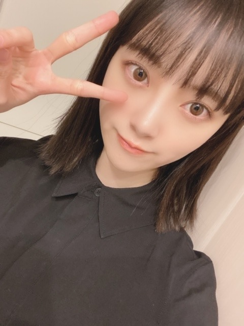
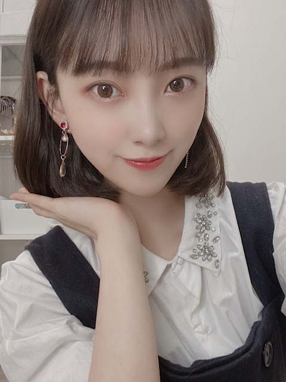
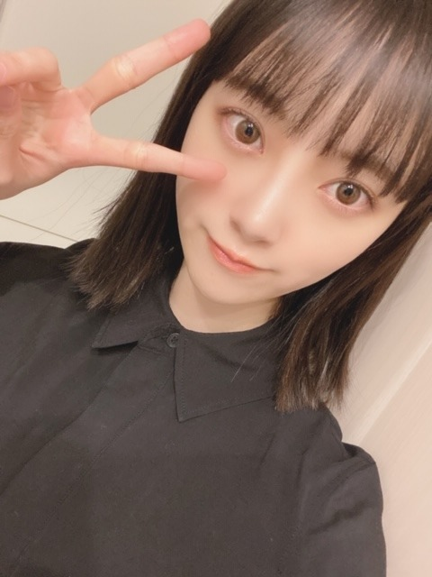
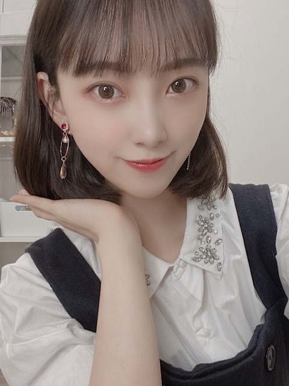

2020/0411Satぜんぶぜんぶ
こんにちはまぐり

前髪なしロングだとこんなかんじに
なるらしい☺︎
どうですか？
でも私の周り、ボブ派が多いんですよ

私もなんやかんやで気に入ってます笑
なので2020年は(多分)ボブでいますね
髪色抜けてきたし また暗くしなあかんなー
暗い髪色の方が落ち着きます ᕦ(ò_óˇ)ᕤ

みなさん、好きな海鮮なんですか？
私は、サザエ ウニ 大アサリ ...
たくさんあります
中学の時、離島に研修に行った時
魚が怖いのに学年1 たくさんの魚を釣ってしまった
変な思い出があります
運だけはあるみたい
キャッチアンドリリースしました
その時に作ったわかめのお味噌汁...
美味しかったなぁ
いつか海の近くにも住みたいです
潮干狩りにも挑戦してみたいです
あ、あと
" 猿に会う " 第二話がdTVにて配信されています☺︎
是非見てください！
素ではないです！
もちろんお芝居です！
怖がらんでね〜
でははは
こんにちはまぐり
前髪なしロングだとこんなかんじに
なるらしい☺︎
どうですか？
でも私の周り、ボブ派が多いんですよ

私もなんやかんやで気に入ってます笑
なので2020年は(多分)ボブでいますね
髪色抜けてきたし また暗くしなあかんなー
暗い髪色の方が落ち着きます ᕦ(ò_óˇ)ᕤ

みなさん、好きな海鮮なんですか？
私は、サザエ ウニ 大アサリ ...
たくさんあります
中学の時、離島に研修に行った時
魚が怖いのに学年1 たくさんの魚を釣ってしまった
変な思い出があります
運だけはあるみたい
キャッチアンドリリースしました
その時に作ったわかめのお味噌汁...
美味しかったなぁ
いつか海の近くにも住みたいです
潮干狩りにも挑戦してみたいです
あ、あと
" 猿に会う " 第二話がdTVにて配信されています☺︎
是非見てください！
素ではないです！
もちろんお芝居です！
怖がらんでね〜
でははは
2020/04/11 14:36


コメント(368)
外出ができない状況で堀ちゃんがこまめにブログ更新してくれて楽しみが増えるよ！
Instagramもチェックしてるから(755も勿論みてるよ
昼間は日当たりが良い場所は暑いくらいでしたね。
可愛いですね。
写真が沢山です、癒されます。
ありがとうございます。
幸せの癒しのコレクションが増えて、更なる希望が持てます。
支えてくれてありがとうございます。
前髪なしロングもかなり可愛いですよ。
韓流アイドルかと思いました。
天使のお姉さん的です。
でも自分もボブの方が好きかな。
可愛い度が更に上がるかな。
より雰囲気も明るいし、イメージ的にもかなりお似合いかと。
暗めの髪楽しみにしてますよ。
かなりの輝き度で魅了してくれる事でしょう。
海鮮は大好きです。
自分は特にサザエ、アワビ、エビ、カニが好きかな。
サザエは地元にいた頃は、友人達と自分で潜って採って、浜辺でつぼ焼きにして食べるのが楽しみでした。
美味しかったのですが、漁師でないので、見つかると怒られました。
良い思い出です。
海の近くに住みたいですね。
毎日海を見て磯の香りを感じたいです。
arにスムージーの記事が載ってましたね。
お身体にはお気をつけてくださいね。
頑張って行きましょう！
前髪なしロングは、いきなり大人の女性
って雰囲気。色々相談しちゃいそう。
髪型は、どっちがどうってことはないけ
ど、そこはＴＰＯじゃない？ってＴＰＯ
の使い方あってるのかな？
好きな海鮮。貝ばかりかい！
猿に会う見たよ～。
本来なら一人１０００円、でも今回は
三人で１０００円って言った時、思わず
金取るんかいって突っ込んでしまいまし
た。
前髪なしロングヘアが凄く綺麗！似合ってます。
でも、ボブも似合ってて
猿に会うのみおなちゃんかっこいい
前髪なしロングも似合うね。大人っぽいようでいて、つるっとしたおでこが可愛い。
でも前髪ありボブも可愛いなあ。僕も暗い髪色好きだよ。あと耳を出してるの好き。
海鮮かあ。僕はマグロのお刺身が好きかな。山育ちだから新鮮な海の幸に憧れる。
未央奈は魚が怖いんだね。世界旅でも魚怖がってたのちょっと面白かった。
猿に会う一話だけ見たよ。最初に未央奈出てきて二話も気になる。dTVの登録しなければ。
では！
今日試合ですごく緊張してしまいました。
堀さんは緊張した時に必ずすることなどありますか？
自分も未央奈さんのボブ好きなので嬉しいです！！
外ハネとかも好きなので、気が向いたらやって欲しいなーと思っております(`･ω･´ゞ
海鮮渋いのが好きなんですね！！昔から漬物も好きで渋々の渋ですね笑
自分も渋いの食べれるようになりたいです、もう25歳になるので笑
「猿に会う」一話は見ました！！未央奈さんがいきなり登場したのがびっくりしすぎて声出ましたΣ( ꒪□꒪)‼笑
二話からの活躍も期待してます！（*'∀'人）♪*+
ハチ
めちゃくちゃ好きです！
前髪なしロング大人っぽい!
綺麗(〃^ー^〃)
ボブ好きだよ♪
未央奈ちゃん似合う(*^^*)
好きな海鮮はタコやイカにあとナマコも好きだよ♪
未央奈ちゃん釣りのセンスあるんだねd(⌒ー⌒)!
猿に会うもチェックするよ♪
今日も１日HAPPYを
ではははまぐり
髪の毛長くても短くても好き！
その髪型ごとに未央奈の良さが出てる！(^^)
これから夏に向かってくしボブ大賛成！
僕はホタテとか好きかなー！
いろいろな味楽しめていいよ！
猿に会うも面白くて大好きだよ〜！
今日もブログ更新ありがとう！
次のブログも楽しみに待ってるね！
猿に会う楽しみ！
未央奈ちゃん、こんにちは〜
とりあえず今年いっぱいはボブで
いてくれるのかな。ありがとう。
そんなに海鮮好きだったの？
僕は貝でいうなら牡蠣とか大アサリ。
浜焼きで食べる様なやつ。
っていうか、大アサリというワードが
出てくる事にビックリ。
記憶が確かなら、僕の地元である
愛知周辺だけだった気がするけど…
どこでも食べられるのかな？
潮干狩りに行きたいならいつでも
付き合いますよ。愛知＝潮干狩り
っていうくらいメジャーだから。
でも…多分…10分で飽きるよ。
いない所には全くいないし
いる所にはアホみたいにいるし
僕はご一緒出来るなら楽しくて
たまらないから問題ないけどね。
では
ちなみに海鮮はサザエかな。つぼ焼きで。
上の写真の髪形も大人っぽくていいじゃないの。
美人だよ。
中学で離島研修、それもいい。羨ましい学校だね。
僕はアワビや流れ子も好きだ。父の故郷がわかめでも有名な県の田舎の海辺だからね。サーフィンやらないの？
更新ありがとうございます！
未央奈さんボブメチャクチャ似合ってます
最高です！
前髪なしロングだと大人っぽく見えますね
どちらも大好きです
可愛すぎて涙が出そうです
未央奈さんはどんな髪型にしても似合いますね
いろんな未央奈さんが見られて嬉しいです
未央奈さん大好きです
頑張ってください
でははは
前髪無しロング似合ってるけど
私はボブ未央奈が好き〜
猿に会う見てるよ〜
ちょっとびっくりしたけど笑
「こんにちはまぐり」めっちゃ好き笑
これから使おうかな笑
じゃあまたコメントするね
次の更新も待ってます⸜( ॑꒳ ॑ )⸝
チャァオ～～!☆彡
プリンセスみおちゃん❕❤️❤️❤️❤️❤️笑顔❇️❇️❇️
３枚目写メ大人、大人、大人で、めちゃめちゃ綺麗です❕❤️❤️❤️❤️❤️❇️❇️❇️笑顔
５枚目(１番下)写メが、めちゃめちゃ～～⤴️⤴️
可愛いぃ～～⤴️⤴️です❕❤️❤️❤️❤️❤️笑顔❇️❇️
(σ≧▽≦)σ❤️❤️❤️
❇️❇️おすまし！より⚜️❇️彡
はまるといえば 釣り
渓流釣りに最近はまりそうや
流行ってるね～？
今こんな状況では
どうぶつの森の方が
コンクリートジャングルへ
行くより安全だからかな～？
日に日に可愛くなってるね
堀ちゃんのロングお綺麗でよかったけど、
堀ちゃんと言えばボブだよねー
また、惚れ直したよー
堀ちゃん、大好きだよー
だからポニーテールを切った髪型ということなんだと思います。
未央奈はいちばん明るい時の髪の毛って何色でしたか？？
前髪なしロングも大人っぽくていいね
好きな海鮮はエビかなー
でも前髪なしのロングも素敵です！
前髪なしロング、激可愛で大人っぽくて素敵です！！
さっきバレンタインの生写真が届いたよ～！
髪の毛長い時の未央ちゃんだ～❤️
可愛いよ～！
本当に毎日ありがとう
大好き！
前髪なしロングめちゃくちゃいい！
ボブ派だったけど、これ見せられたらめちゃくちゃ悩む(笑)
ボブもいいんだよなあ
さて、好きな海鮮ね～……迷う
たくさんありすぎて。
今の気分だと、ウニ食べたいな～
カニもあり
お寿司食べたい。
ではははは
猿に会うは完全に未央奈ちゃんの演技にやられた
流石の演技力
ロング、ボブどちらも大好きです。
握手会の時、ロングの時多かったから、ボブの未央奈ちゃんみたいなー
毎日、ブログ等SNS更新ありがとう
癒されてるでー！
でも私はロング派！
みおなかわいい！
大人っぽくてセクシーで好きや!!!!!!!!!!!!!!!!!!!
未央奈はどんな髪型でもよく似合うしめっちゃカワイイよ
未央奈・・・僕に「ライス下さい 」
未央奈365日愛してまーす
優しいんだね。わかります。
ありがとう。
いつも挨拶ギャグにクスッと笑わせてもらってます！笑
僕はアサリの味噌汁が好きですね～ 明日も未央奈ちゃん頑張って下さい！ ボブ大好きです(*´∇｀*)
サザエ、ウニ、アサリ、美味しいですね(^O^)
未央奈ちゃんの地元、岐阜の飛騨牛、美味しいのでしょうか？一度食べてみたいです(*^^*)
アワビは火を通した方が好きですね
(邪道ですね)
ロングかわいい
伸ばすと美しさもでて感動しました。
やっぱりボブも可愛い❤️
こんにちはまぐり。あれは新しいギャグかな？
とっても良いと思います。ライブでやって欲しいなー
僕は、家で暇しているけど、堀ちゃんはどうやって過ごしてるのかな？そうやって考えるのが、日々の楽しみになっています。
積極的な投稿に感謝しています。
愛しています^_^
堀未央奈さんブログ更新ありがとう
海鮮美味しいよね⁉︎
今日はあさりを取りに行ってました
沢山取れてたけど腰が痛い⁉︎
とりあえず酒蒸しとお吸い物
あさりごはんにして食べようと思います
春ですなぁ〜〜
未央奈ちゃんぜんふぜんふ好き〜(^^)
髪型は、何でも素敵です。心意気が、込もっているからです。
その質問待ってました。 イカ いや、なんといってもイカが一点押しで
す。 海産は、貝類が、肝の様な気がします。 長時間、海のミネラルなど
を、溜め込んでいるからと勝ってに推測します。
アオサの味噌汁は、お薦めです。
コメントする